NoteNest on AWS (CEA SE-490). AWS console screenshots taken on 5 Nov 2026, region ap-southeast-2. Account identifiers are blacked out. Command-line evidence is in docs/evidence/*.txt.
VPC notes-vpc, state Available, IPv4 CIDR 10.0.0.0/16 (brief item 1: VPC with CIDR).
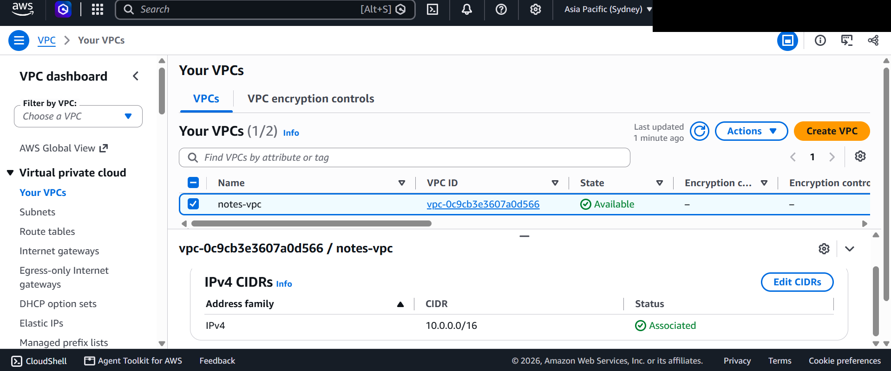
The project's subnets (notes-public-0/1, notes-app-0/1, notes-db-0/1) across two Availability Zones; the unnamed rows are the account's default-VPC subnets. 'Block public access' is Off at subnet level because exposure is controlled by route tables and security groups; only the public subnets auto-assign public IPs (see cli-evidence.txt).
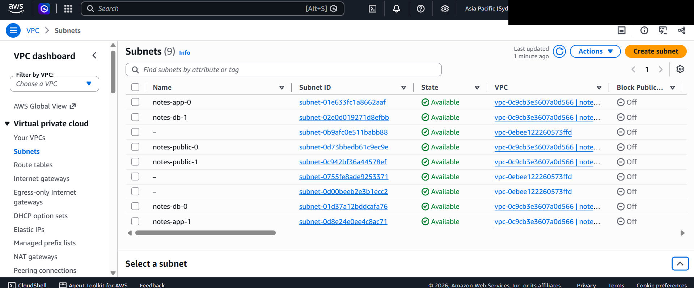
notes-public-rt (2 subnets) and notes-private-rt (4 subnets); the routes themselves (public to Internet Gateway, private to NAT Gateway plus the S3 endpoint) are listed in cli-evidence.txt.
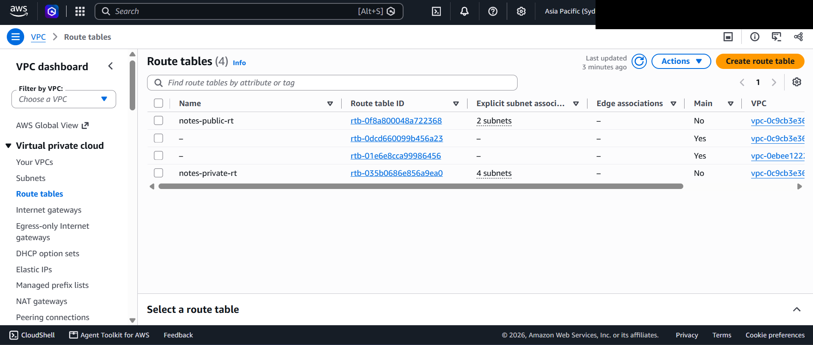
notes-igw attached to the project VPC. The NAT Gateway (state available) and the S3 gateway endpoint are shown in cli-evidence.txt.
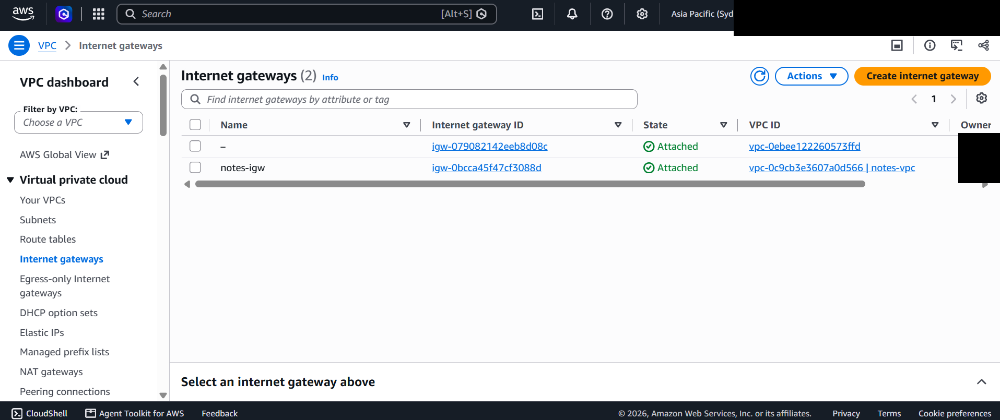
The three tier security groups notes-alb-sg, notes-app-sg and notes-db-sg. Their rules (SG-to-SG references, no port 22) are listed in cli-evidence.txt.
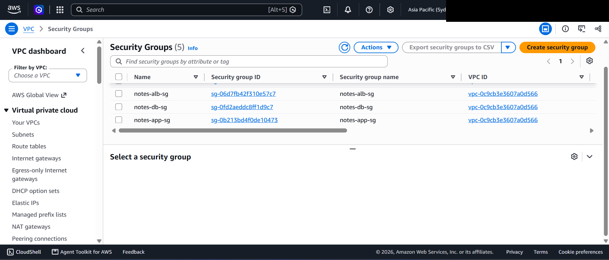
Running notes-app instances and the t3.small notes-mongodb database instance, all passing status checks. The rows marked Terminated are the instances removed during the scale-in, failure and refresh tests.
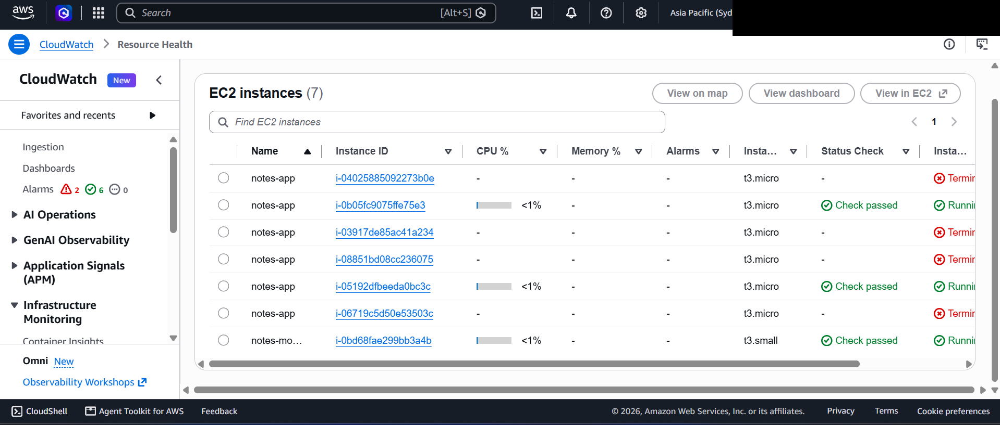
notes-alb: type application, Internet-facing, state Active, IPv4, two Availability Zones. DNS name and listener are in cli-evidence.txt and the README.
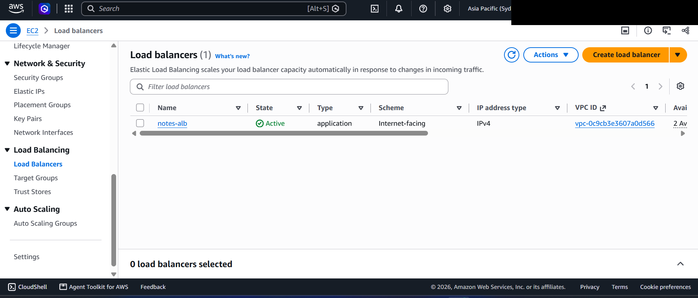
notes-web-tg (HTTP 80, instance targets) attached to notes-alb: 2 total targets, 2 healthy, 0 unhealthy.
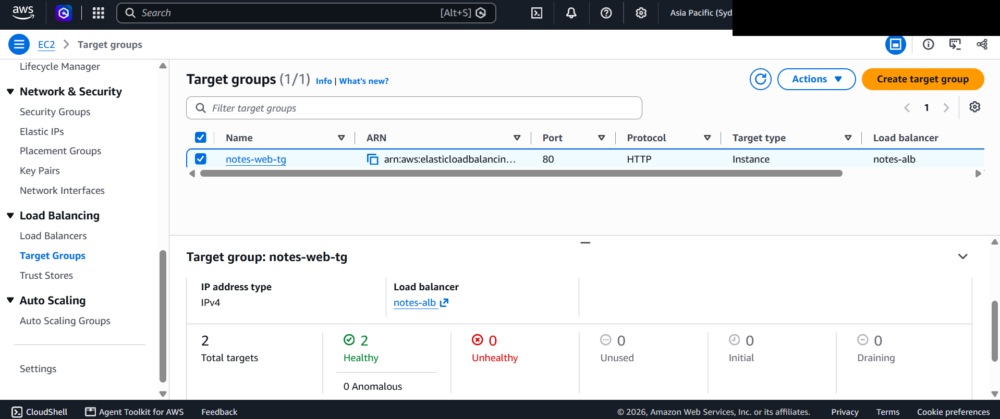
notes-app-asg at desired capacity, 2/2 healthy, launch template notes-app-lt, with scaling activity history (a launch to replace an unhealthy instance). Full scale-out and scale-in history is in scaling-timeline.txt.
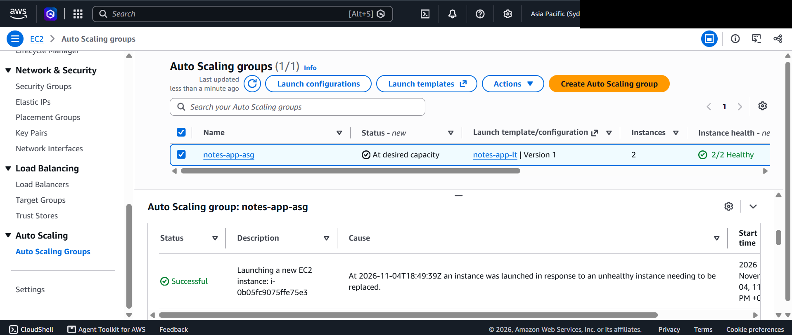
notes-mongo-data: 20 GiB gp3, In-use, status check Okay (encryption confirmed in cli-evidence.txt). The Name field is in edit mode only because the page was clicked.
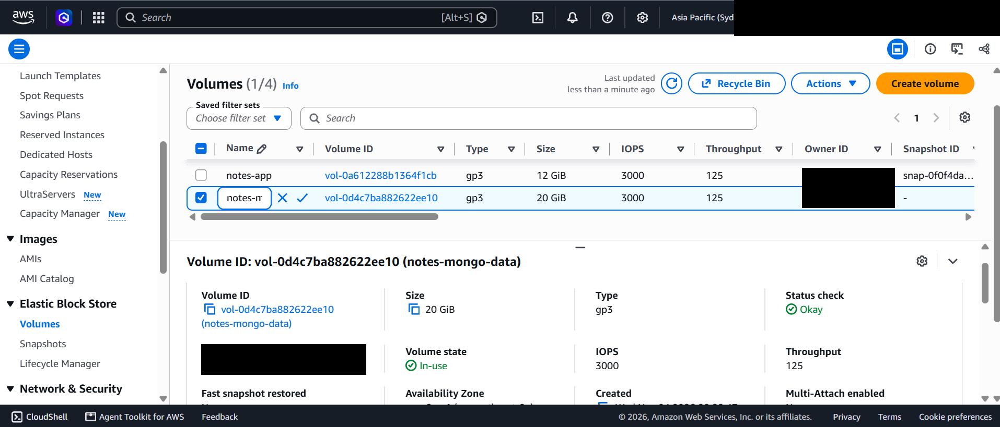
ECR repositories notes-app/api and notes-app/web with tag immutability Immutable and AES-256 encryption (brief item 5).
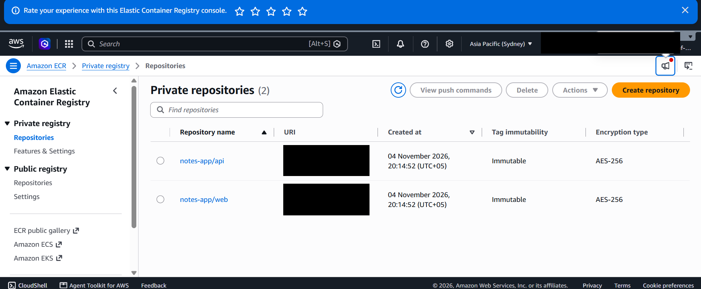
GitHub Actions workflow CI/CD (deploy.yml): successful runs on main for each commit. Each run executes test, build-push and deploy.
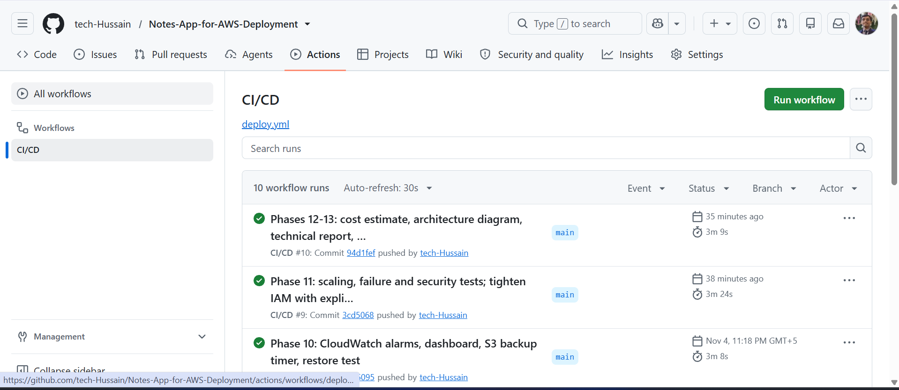
NoteNest served from the load balancer address (notes-alb-….ap-southeast-2.elb.amazonaws.com), logged in, with the footer Deployed via CI/CD on AWS added by the pipeline test change (brief item 2).
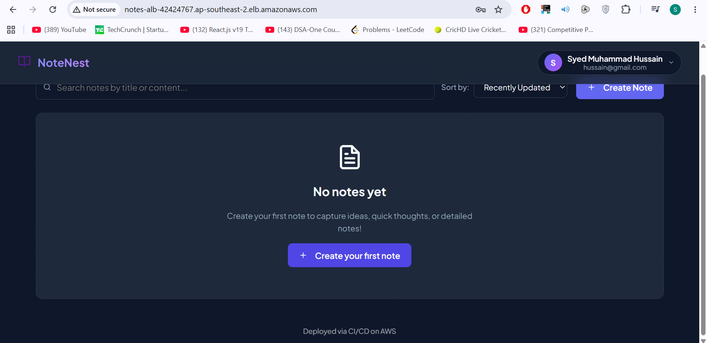
Alarms by service: 0 in alarm, 6 OK, including notes-target-5xx and notes-unhealthy-hosts with their threshold lines (brief enhancement: CloudWatch).
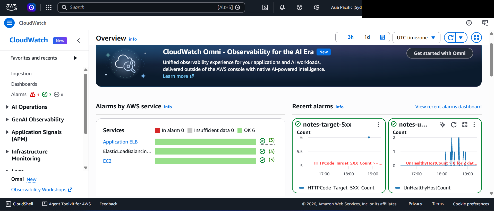
The private backup bucket with the mongo/ prefix holding the nightly MongoDB dumps (brief enhancement: S3 backups). The dump object and the restore test are in backup-restore-test.txt.
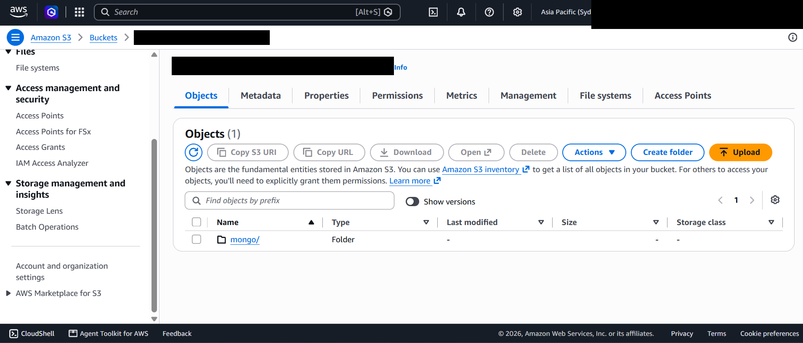
Alarm notes-asg-cpu-high: CPU rising from about 1% to about 100% (the CPU-burn demonstration, around 18:30 UTC) and falling back, matching the 2 to 4 to 2 instance timeline in scaling-timeline.txt.
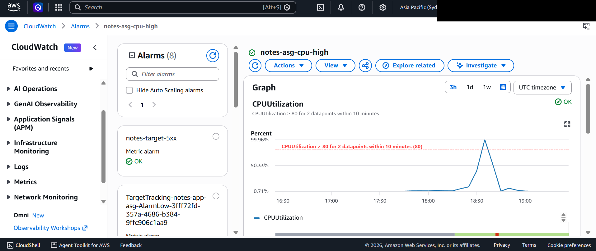
IAM role list for the account, including AWSServiceRoleForAutoScaling (used by the scaling group). The project's own roles notes-app-ec2-role, notes-db-ec2-role and notes-github-deploy-role are further down the list; their policies are in infra/iam.tf and infra/github_oidc.tf.
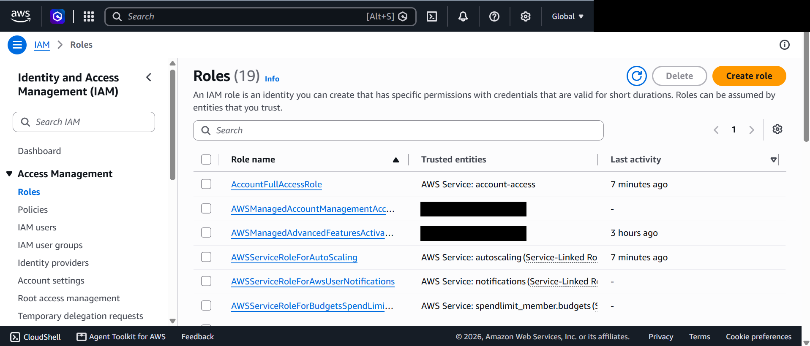
Seven parameters under /notes-app/prod; secrets (JWT_SECRET, MONGO_URI, passwords) are type SecureString. Values are not shown (brief item 8: secrets management).
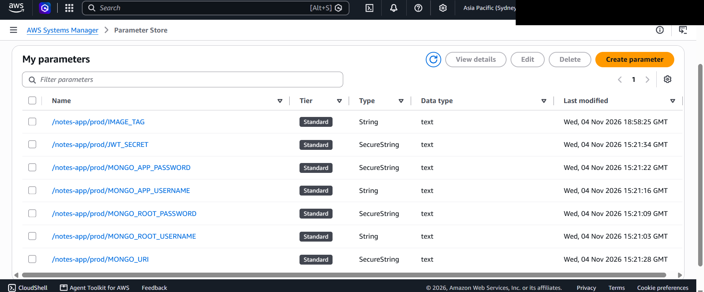
Public page served by the load balancer before sign-in.
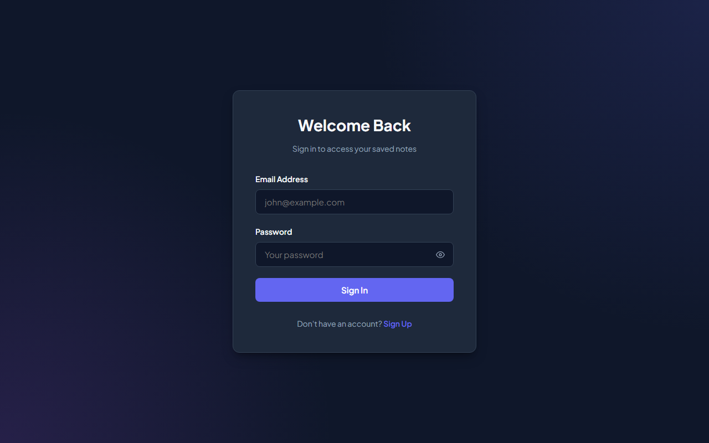